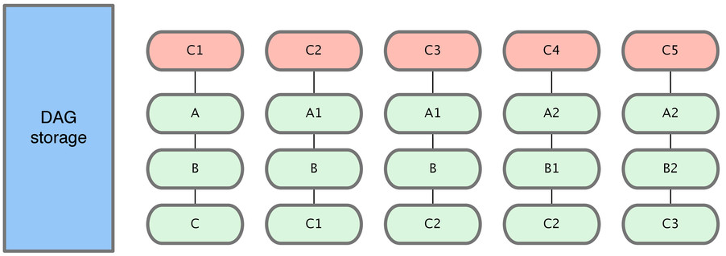

Oficina
Criado por Erick Mendonça
Hello!
Ninja
Full Stack Developer
GDG Aracaju Co-organizer
erickmendonca
erickmagnus
Agenda
-
- O que é?
- Como usar?
-
- O que é?
- Como usar?
O que é?
1
1
O que é?
1
1
O que é?
Controle de versão distribuído
Gratuito e open source
Inicialmente desenvolvido por Linus Torvalds
Licença: GNU GPL v2
Lançado em 07 de abril de 2005
Controle de versão
Controle de versão é um sistema que registra as alterações em um arquivo ou conjunto de arquivos.
Permite que você possa recuperar versões anteriores dos arquivos.
Podem ser usados com outros tipos de arquivos além de código-fonte.
git não é
Subversion
Esqueça o SVN!
não é uma evolução
não é uma evolução
Centralizado

Distribuído

Armazenando diferenças
Armazenando em grafos
Como usar?
Calma!
init
O comando git init inicia um novo repositório.
Se não for informada uma pasta, ele cria no diretório atual!
git init :pasta
clone
O comando git clone cria uma cópia local de um repositório Git.
É o método mais comum de obter o código de alguém!
git clone :repositório :pasta
config
O comando git config te permite alterar algumas configurações de sua instalação Git.
git config :opções
git config --global user.name "Meu nome"
git config --global user.email Meu@email
add
O comando git add te permite selecionar quais arquivos serão salvos no controle de versão.
git add :arquivo/pasta
commit
O comando git commit pega os arquivos selecionados e os salvam no histórico do projeto.
git commit -m :mensagem
status
O comando git status mostra o estado atual da pasta de trabalho.
git status
Fluxo
log
O comando git log permite inspecionar o histórico do projeto.
git log :opções
checkout
O comando git checkout possui vários usos: checar arquivos, commits e branches.
git checkout :commit/branch
revert
O comando git revert desfaz um commit salvo, mas sem alterar o histórico do projeto.
git revert :commit
reset
O comando git reset desfaz alterações em arquivos na pasta de trabalho.
git reset :opções :arquivo
clean
O comando git clean remove arquivos que não estão no repositório da pasta de trabalho.
git clean :opções
branch
O comando git branch permite criar ambientes de desenvolvimento isolados dentro do mesmo repositório.
git branch :nome
merge
O comando git merge é uma forma poderosa de integrar mudanças em branches diferentes.
git merge :opções :branch
rebase
O comando git rebase permite mover branches, alterando o histórico para que seja mais linear.
git rebase :base
Hora da revisão
git init
git add .
git commit -m "C1"
git commit -m "C2"
git branch idea
git checkout idea
git commit -m "C3"
git checkout master
git checkout -b hotfix
git commit -m "C4"
git checkout master
git merge hotfix
git merge idea
git branch -D hotfix
git tag v1
git commit -m "C6"
git checkout -b refactor
git commit -m "C7"
git checkout master
git commit -m "C8"
git commit -m "C9"
git checkout refactor
git commit -m "C10"
git rebase master
diff
O comando git diff exibe as mudanças entre commits, árvores e elementos dentro do repositório.
git diff :opções
git diff
Diferenças entre os arquivo atuais e suas últimas versões adicionadas.
git diff src/git diff LICENSE
Diferenças entre a pasta ou arquivo e suas últimas versões adicionadas.
git diff --cached mastergit diff --cached HEADgit diff --cached 22981ec
Diferenças entre os arquivos adicionados e um outro commit.
master: a branch master
HEAD: ponto atual do repositório
22981ec: um commit antigo
remote
O comando git remote permite gerenciar as conexões remotas do seu repositório.
git remote :opções
fetch
O comando git fetch baixa uma branch de outro repositório remoto, como todos os commits e arquivos.
git fetch :remote :branch
pull
O comando git pull é uma automatização: ele faz o fetch do repo remoto e o merge com o branch atual.
git pull :opções :remote :branch
push
O comando git push move uma branch local para outro repositório.
Envia o seu código para outro lugar!
git push :remote :branch
Referências
- GIT, by Scott Chacon
- Atlassian Git Tutorials
- Git branching model
- How to undo (almost) anything in Git
- GitHub Training
- Git Flight Rules
- Curso gratuito: Try Git
THE END
- Slides no GitHub
- Git cheat sheet
- eBook gratuito Pro Git